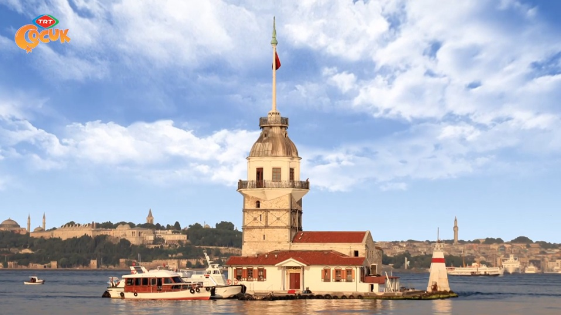
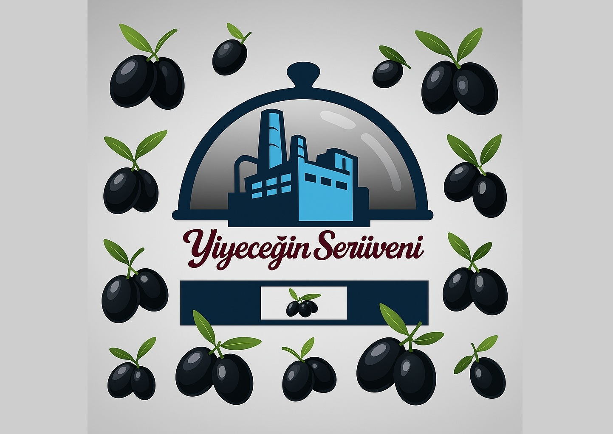

Bireysel Farklılıklar  GÜZEL MEMLEKETİM
Kız Kulesi GÜZEL MEMLEKETİM
Gezsen Anadolu'yu BİZİ BİZ YAPANLAR
Türklerde Yardımlaşma Anlayışı GELENEKSEL TÜRK OYUNLARI
Beştaş Ve İki Ceviz Bileti SAĞLIKLI YAŞAM
Hira'dan Menemen Tarifi  GELENEKTEN GELECEĞE
Türk Çayı GELENEKTEN GELECEĞE
Karagöz ve Hacivat GELENEKTEN GELECEĞE
Bilmece Bildirmece SANAT DÜNYASI
Güvenme Varlığa Düşersin Darlığa BİLİM VE TEKNOLOJİDE YOLCULUK
5D İle Sıfır Atık